Davin Stirling
detail orientated
About
Background
Hiya, I'm Davin, an IT Professional with over 12 years experience, pivoting into web development
I'm interested in backend technologies including GraphQL API, and keen to build on my experience with LAMP and MERN stacks.
I'm eligible to work in the UK, where I'm currently based, and also in New Zealand where I lived for 12 years pre-covid
I'm open to new opportunities in 2021 - here's my Developer CV
Qualifications
Certified Scrum Master - Agilify, 2020
Full Stack Web Development bootcamp - iO Academy, 2020 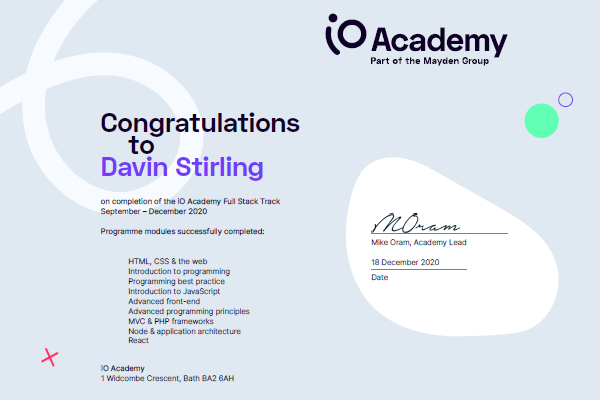
First Class BSc (Hons) in Computer Science integrated with IBM UK
Interests
I'm interested in good design & architecture, psychology and mental health, sci-fi shows, travelling and making short films
GitHub Profile
Portfolio
Laravel TShirt App
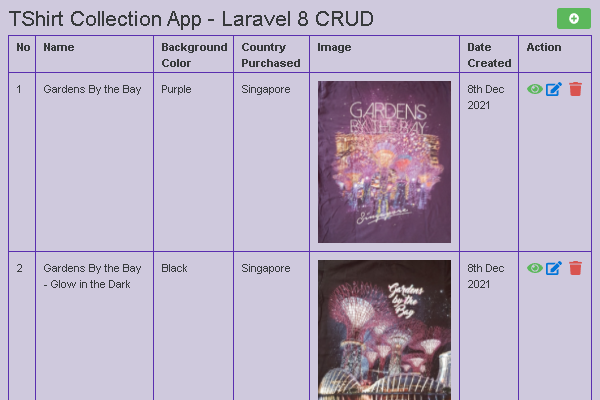
I've started learning Laravel 8 by following a tutorial about making a CRUD app, but customising the fields to make a TShirt App instead. I've also recently added an Image Uploader and deployed it as a demo site.
I actually own a lot of tshirts, as I collect them whenever I go travelling, so they are usually about events or places I've been to. Sadly most of my tshirts are still in Auckland, as I only had a few with me when I travelled to the UK.
So far I've noticed that, compared to the Slim framework, there's a lot less boiler plate code required to get basic functionality up and running.
PHP | Laravel 8 | Blade Templates | MYSQL | GitHub Repo Dev Branch
Wellbeing Tracker using PHP and MVC
I'm interested in psychology so decided to digitise the GP-CORE form where you can answer questions about subjective wellbeing.
CORE Forms from the CORE Systems Trust can be used to monitor changes in wellbeing over time in health care situations. There are different versions, like GP-CORE for the General Population which has 14 questions.
After collecting the answers on the form, and storing them in the MySQL database, I plotted the overall score on a graph using the JpGraph library. This app is built using the Slim 4 framework and MVC pattern, and is still a work in progress.
More
In June I started restructuring the app into separate pages within a feature branch, and added register/login functionality. In August I finished protecting the routes and indivdual pages with sessions, and the app now has enough features that I've deployed a live demo version. In September I deployed a more mobile friendly version with better Media Queries and improved formatting of the Question Form
Next I need to tidy up my git branches so that all the feature commits in different branches get merged into main, and then I can start work on adding more features, like a password reset option and additional forms.
Some of my bigger challenges have been working out how to better use the graph plotting library, and learning more about using Git (eg cherry picking & stashing) in order to resolve certain branching issues I came across. I also discovered that some tech isn't meant to work together - like trying to add JWT to my project without realising its mainly intended for APIs and I'd written a (small) monolith...
PHP | Slim 4 | MVC | JPGraph | MYSQL | Responsive | GitHub Repo Feature Branch
Cat-themed PWA ToDo App
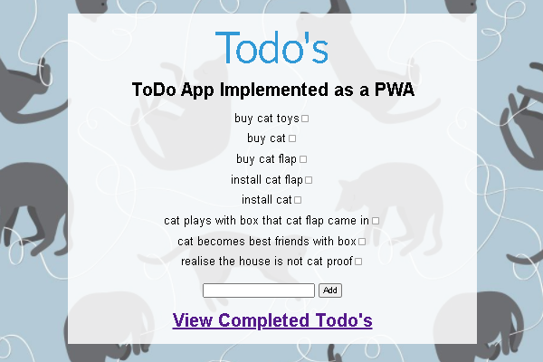
As part of the bootcamp last year we did a half day workshop on PWAs or Progressive Web Apps.
We took an existing ToDo app written using the Slim 4 framework, and turned it into a PWA by adding a Service Worker to provide offline support.
I've since updated it by improving the styling and adding a cat-theme. I've also now got the live demo site setup and working with the Offline browser option.
PHP | Slim 4 | JavaScript ES6 | PWA | GitHub Repo
Rock Paper Scissors Game
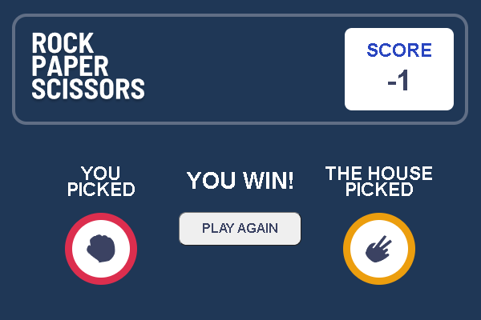
I'm currently working through a FrontEnd Mentor Challenge to build the Rock Paper Scissors game, and I've recentlly improved the layout and styling.
I've deliberatly tried to break the challenge down into tiny tasks and put them in separate branches, and then documented in the Readme how I went about solving this challenge in an iterative way.
JavaScript | CSS3 | HTML5 | GitHub Repo
PHP Template with Unit Tests for Code Katas
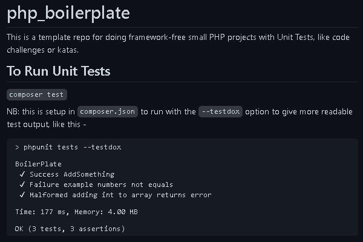
I was working on a PHP code kata with my mentor and couldn't remember how to setup unit tests. So I thought I would make a GH Template repo that was already setup with such tests, so I could easily reuse it when practising other code kata or challenges.
Reversi Game Kata
I've since cloned the repo and used it for a kata to work out the next legal moves for a game of Reversi.
Poker Hands Game Kata
I'm currently also working through implementing the rules of Poker for another kata with my mentor.
PHP | PHPUnit | GitHub Repo
48 Hour Hackathon - Lemonie Mental Health Exercises
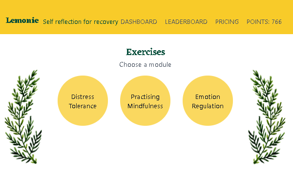
I took part in my first 48 Hour hackathon over the weekend 16-18 July 2021, as part of Level Up Society Hackathon
It was both exciting and challenging to work with new people to try and design & build a prototype with gamification elements, all within 48 Hours!
We choose the categories of Mental Health and Learning and made a website where you can complete exercises based on a Dialectical Behaviour Therapy workbook
I mainly worked on setting up & designing the Firebase cloud DB, and writing functions using async/await in vanilla JS to add and get data from the DB. I also tried to integrate that with the Vue front end, but ran out of time.
Our Submission is here - Lemonie: Self Reflection for Recovery, by Team Awesome Force
Next I'd like to finish integrating the front and back ends and setup proper access controls for the cloud database.
Firebase Firestore DB | JavaScript ES6 | Vue v2 | Bootstrap | Tailwind CSS | GitHub Repo
Killjoys Themed Vue Example
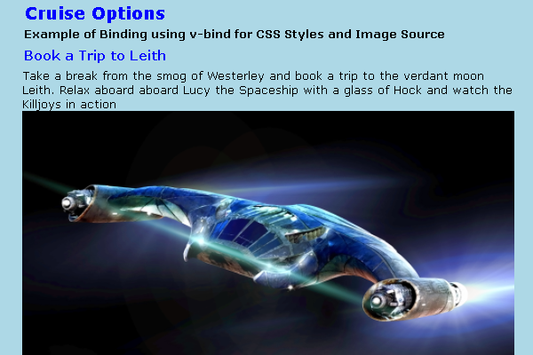
I attended a webinar about Vue and then googled for some further tutorials to make an example page, themed around characters & situations from the TV series Killjoys
Vue v3 | GitHub Repo
Hack Night - Space Flight Booking Site
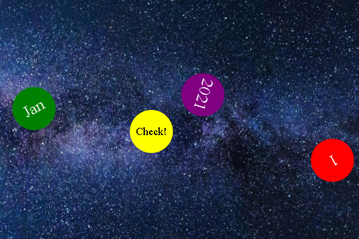
I attended a mini hack night in April, where teams of 3 were challenged to create a system that allows people to book a space flight, all in under 90mins!
We decided to make a website where you could select dates, and I was able to contribute ideas & code from my previous solar system animation, plus async/await for calls to the deliberatly flaky external API.
Although we didn't finish the website that evening, I really enjoyed the experience of being thrown together to create something tangible within a short timeframe.
Next I'd like to finish my take on the site by adding suitable booking success & failure images and making them appear & disappear at the right time.
JavaScript | HMTL5 | CSS3
RESTful Banking API
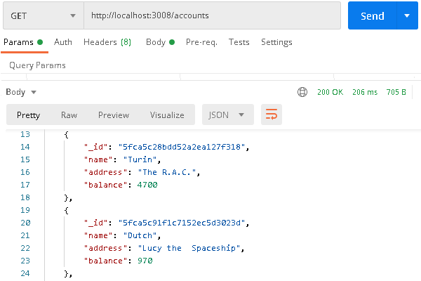
After learning about RESTful APIs and Node, I finished created a Banking API, themed with characters from the TV series Killjoys.
I later documented the API by adding routes, example requests, and local install instructions to the Readme
Node.js | Express | MongoDB | REST API | GitHub Repo
Social Media Site using GraphQL
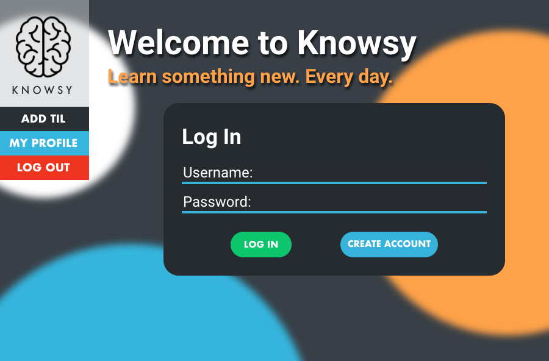
As a team of 4 we made a 'Today I Learned' social media site called Knowsy. We decided to use the MERN stack, with separate repos for the front & backend, and GraphQL for the API calls to MongoDB.
More
We mostly did pair programming and I chose to work on the backend API. I was heavily involved in researching & creating the GraphQL queries & mutations, and later integrating the front & backends. We handled login manually, using the jsonwebtoken and bcrypt node modules
This was our first scrum project working unsupervised, and I learned that I definitely prefer a more structured environment. Next time I would allocate time for researching before sprint/task planning, as we hadn't used GraphQL before. I would also allow more time when estimating tasks, to deal with the inevitable issues that crop up when trying to integrate different repos worked on by different people.
On the demo site above, you can currently create an account or login with an existing account. The demo database is hosted in MongoDB Atlas
GraphQL | Node | Express | JWT | BCrypt | React | Atlas MongoDB | GitHub Repo
To Do App using PHP MVC
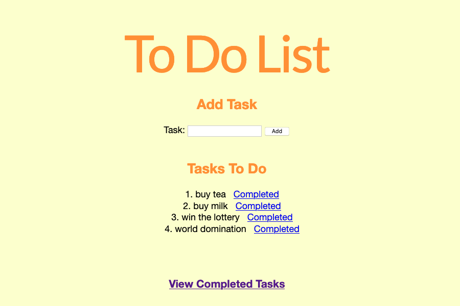
We learned about MVC & PHP frameworks, then used them as part of an exercise to create a To Do app. We cloned an existing repo that contained the Slim 4 framework, and worked through the architecture plan as a group. I then worked independently to create the functionality to add, complete or delete a task from the underlying MySQL DB, using Routing, the Dependency Injection Container, Factories, Controllers & Views.
PHP | Slim 4 | MVC | MYSQL | GitHub Repo
Scrum Master for Ecommerce Site using Design Patterns
I volunteered as Scrum Master and facilitated our team to create an e-commerce site based on existing product data. I used my previous OO experience to assist the team with creating the architecture plan for the site.
We decided to use the Hydrator Entity design pattern along with a PDO Connection in our LAMP stack, with HTML, CSS & Bootstrap for the frontend. We also reviewed the SOLID principles and adjusted the plan accordingly. I did pair programming to create some of the classes and peer reviewed colleagues code in GitHub. During Sprint Review I gave a non-technical overview of the site's architecture.
PHP | Bootstrap | MYSQL | SOLID | GitHub Repo
Jarver's Crypt Maze Game
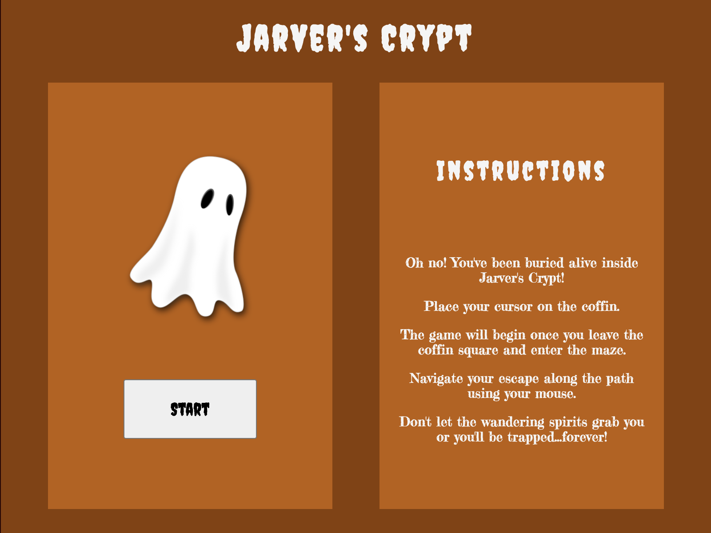
As part of a scrum team of 8 people, we designed & created a maze game using Javascript. I did some pair programming to design the splash screen wireframe & code that, and coded the eventListeners to detect collisions with the path & ghost obstacles. I also implemented changes after our tutor's code reviews
JavaScript ES6| HMTL5 | CSS3 | GitHub Repo
Solar System Animation using only CSS and SVGs
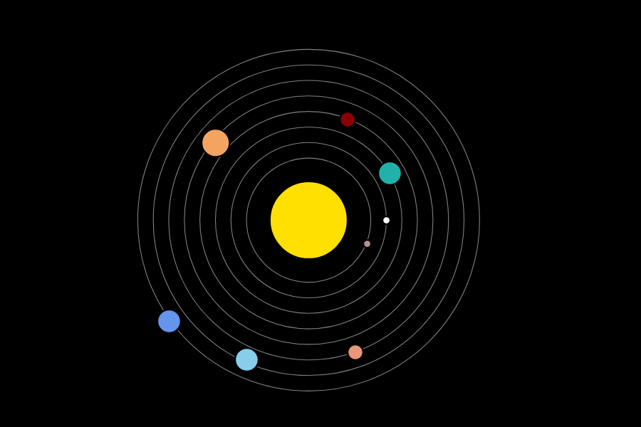
As part of learning Advanced FrontEnd techniques, we created an animation of our solar system, using SVGs and keyframes & animations in CSS
HTML5 | CSS3 | SVG | GitHub Repo
Skills
LAMP | MERN | PHP7 including Slim4 & PHPUnit | JavaScript ES6 including React | Node.js & Express | GraphQL API | RESTful APIs & Postman | MongoDB & Compass & Atlas | MySQL | HTML5 | CSS3 | OOP, SOLID & MVC design principles | Git & GitHub | Docker | Scrum & Agile